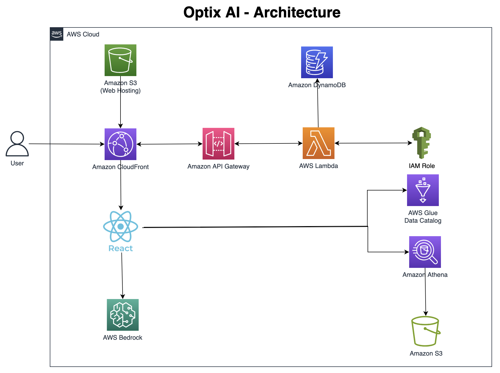

← Back to Portfolio
⚡Executive Summary
OptiX AI solved an enterprise-wide Athena cost crisis by transforming query optimization from a manual, reactive process into an automated, AI-powered platform. Processing millions of queries across multiple AWS accounts, it reduced query costs by 70%, improved performance by 3x, and saved customers over $2M annually—while freeing data engineering teams from manual optimization work and enabling proactive cost management at scale.
📋Situation
The Enterprise-Wide Problem
Enterprise customers running thousands of Athena queries daily faced an organizational cost crisis: unoptimized queries were driving unpredictable cloud costs into the millions, while data engineering teams spent countless hours manually identifying and fixing problematic queries. This wasn't a query problem—it was a platform-level cost management problem affecting every analytics workload at scale.
The Business Challenge
The query optimization crisis manifested across the entire data organization:
- Cost Explosion: Unoptimized queries scanning unnecessary data, leading to unpredictable costs reaching millions annually
- Performance Issues: Slow queries impacting business-critical analytics and blocking decision-making
- No Visibility: No centralized way to identify problematic queries across multiple AWS accounts
- Manual Bottleneck: Data engineers spending hours manually analyzing and rewriting SQL for each issue
- Reactive Firefighting: Teams only discovering cost issues after monthly bills arrived, too late to prevent waste
- Governance Gaps: Unable to enforce best practices or track improvements across teams
Scale of Impact: This platform-level problem was affecting every analytics workload, blocking data-driven decision-making, and wasting millions in cloud spend. Manual query optimization didn't scale—we needed a solution that could analyze millions of queries automatically while providing actionable recommendations.
🎯Task
The Challenge: Scaling Query Optimization Across Millions of Queries
The core challenge wasn't building an analyzer—it was solving an organizational cost management problem that required:
- Multi-Account Scale: Process millions of query records across multiple AWS accounts without impacting production workloads
- Dual Optimization Approach: Provide both automated best-practice recommendations and AI-powered deep analysis for different optimization needs
- Real-Time Analytics: Near real-time insights while handling high-velocity data ingestion from continuous query execution
- Actionable Intelligence: Not just identify problems—provide specific, implementable solutions with expected cost savings
- Self-Service at Scale: Enable data engineers and analysts to optimize queries without deep AWS expertise
- Proactive Cost Management: Shift from reactive firefighting to proactive cost optimization and governance
The Strategic Imperative: This wasn't about building a monitoring tool—it was about transforming query optimization from a manual, reactive bottleneck into an automated, proactive process that could support enterprise analytics at scale. Success meant preventing millions in cost waste while freeing data engineering teams to focus on strategic work instead of manual SQL optimization.
⚙️Action
The Architecture
OptiX AI was built on a modern, serverless AWS architecture designed for scale, performance, and cost-efficiency:

Key Architecture Highlights
- Global Content Delivery: CloudFront serves React application from S3 with low-latency access worldwide
- Credential Management: Lambda assumes IAM roles to provide temporary AWS credentials to frontend for direct service access (STS-based, per-user scoped, short-lived, read-only analytics permissions)
- Direct AWS Integration: React app uses temporary credentials to call Glue, Athena, and Bedrock directly, reducing latency
- Dual Optimization Engine: Automated best-practice recommendations plus optional AI-powered analysis using Amazon Bedrock (Claude)
- Activity Tracking: DynamoDB logs user activities and optimization results for analytics and audit trails
- Metadata Discovery: Real-time schema fetching from Glue Data Catalog for database and table information
Technology Stack
Amazon CloudFront
Amazon S3
Amazon API Gateway
AWS Lambda
AWS IAM
AWS Glue
Amazon Athena
Amazon Bedrock (Claude)
Amazon DynamoDB
React 18
Node.js 18
AWS CDK (TypeScript)
Key Architectural Decisions
1. Serverless Frontend Delivery
- CloudFront + S3: Global content delivery with low latency, automatic scaling, and cost-effective static hosting for React application
- Edge Caching: Reduced load times for users worldwide through CloudFront's edge locations
- Secure Access: Origin Access Identity (OAI) ensures S3 bucket is only accessible through CloudFront
2. Credential Management & Security
- Temporary Credentials: Lambda assumes IAM roles to provide short-lived AWS credentials to React frontend
- Least Privilege Access: Scoped IAM permissions ensure users only access authorized Athena workgroups and Glue databases
- API Gateway Integration: Centralized authentication and authorization layer for all backend operations
3. Direct AWS Service Integration
- Client-Side AWS SDK: React app uses temporary credentials (obtained via Lambda/STS) to directly call Glue, Athena, and Bedrock, reducing latency and backend complexity
- Schema Discovery: Real-time metadata fetching from Glue Data Catalog for database and table schemas
- Query Execution: Direct Athena API calls for fetching query history and execution details
4. Dual Optimization Approaches
- Best Practices Engine: Automated analysis based on Athena best practices (partitioning, file formats, compression, data types)
- AI-Powered Optimization: Optional Bedrock integration for context-aware query analysis and intelligent recommendations
- User Choice: Users select approach based on needs—quick fixes or deep analysis with detailed explanations
5. Activity Tracking & Analytics
- Usage Logging: Asynchronous capture of user activities and optimization patterns
- Performance Metrics: Track optimization success rates and cost savings over time
- Audit Trails: Complete history of query optimizations for compliance and analysis
6. Natural Language Query Generation
- NL to SQL: Users describe queries in plain English, and Bedrock (Claude) generates optimized SQL queries
- Schema-Aware: AI understands database schemas from Glue to generate contextually accurate queries
- Multiple Options: Generates 3-4 query variations with different optimization approaches
7. Pre-built Query Templates
- Template Library: Curated collection of optimized query patterns for common use cases
- Categorized: Organized by complexity and use case (aggregations, joins, partitioning, window functions)
- Customizable: Users can adapt templates to their specific schemas and requirements
Trade-offs & Design Decisions
Dual Optimization Strategy: Both automated and AI-powered approaches serve different user needs efficiently.
Direct AWS SDK vs Backend Proxy: Chose client-side AWS SDK calls with temporary credentials for lower latency and reduced backend complexity, accepting the trade-off of exposing AWS service calls in browser (mitigated by scoped IAM permissions).
CloudFront vs Application Load Balancer: Selected CloudFront for global edge caching and CDN capabilities over ALB, optimizing for static content delivery and worldwide performance.
DynamoDB vs RDS: Implemented DynamoDB for activity logging due to serverless scaling, pay-per-use pricing, and millisecond latency, accepting eventual consistency for non-critical audit logs.
📊Result
Business Outcomes
3x
Performance Improvement
85%
Faster Optimization Time
$2M+
Annual Savings (per customer)
Platform-Level Impact at Scale
- Eliminated Cost Waste: 70% query cost reduction across all customers prevented millions in unnecessary cloud spend annually
- Accelerated Analytics: 3x performance improvement enabled faster business insights and data-driven decision-making
- Transformed Engineering Productivity: 85% reduction in manual optimization time freed data teams to focus on strategic initiatives instead of SQL tuning
- Proactive Cost Management: Shifted from reactive firefighting to proactive optimization, preventing cost overruns before they occurred
- Democratized Optimization: Business analysts with limited SQL expertise could now optimize queries using natural language and AI recommendations
- Established Best Practices: Query templates and AI suggestions created organizational standards, improving code quality across teams
- Scaled Across Workloads: Single platform processing millions of queries daily across multiple AWS accounts without human intervention
Strategic Impact: OptiX AI solved an enterprise-wide cost management problem by transforming Athena query optimization from a manual, reactive process into an automated, proactive platform. By processing millions of queries and providing dual optimization approaches (automated best practices + AI-powered analysis), we enabled organizations to prevent cost waste at scale while accelerating analytics performance—fundamentally changing how enterprises manage query costs and performance.
🎥Demo Video
Watch OptiX AI in action - see how it identifies costly queries, provides AI-powered optimization suggestions, and delivers actionable insights:
💡Key Learnings & Best Practices
Technical Insights
- Dual Optimization Approach: Combining automated and AI methods serves different optimization needs effectively
- Client-Side AWS Integration: Direct AWS SDK calls from React with temporary credentials reduces latency and backend complexity while maintaining security through scoped IAM permissions
- Serverless Architecture: CloudFront, Lambda, and DynamoDB provide automatic scaling, pay-per-use pricing, and global performance without infrastructure management overhead
- Cost Attribution Accuracy: Precise cost calculation requires deep understanding of Athena pricing model, including data scanned, compression ratios, and file formats
Product & UX Insights
- Progressive Disclosure: Start with simple visualizations and allow users to drill down into details - don't overwhelm with complexity upfront
- Actionable Insights: Users need more than just identification of problems - provide clear, implementable solutions with expected outcomes
- Multi-Persona Design: Solution must serve both technical data engineers (who want raw data and SQL) and business analysts (who need visual insights and natural language)
- On-Demand AI Processing: Real-time AI recommendations provide fresh, context-aware optimizations that users can immediately apply and validate